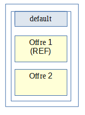

4.2. Architecture des données & multisite¶
4.2.1. Inventaire des données¶
Voir aussi
Le modèle de données complet est explicité dans la documentation externe dédiée (« Modèle de données »).
Le tableau ci-dessous représente l’inventaire des données gérées par VITAM, avec leur localisation et le composant responsable du cycle de vie de la donnée (i.e. règles de création / modification / suppression) :
| Type | Données prises en charge par le module | Composant responsable de la donnée | Persistence locale | Persistence BDD métier | Persistence Workspace | Persistence Storage | Persistence BDD techniques | Persistence inventaire ansible |
|---|---|---|---|---|---|---|---|---|
| métier | Sas d’entrée des SIP (check antivirus et format du SIP) | ingest-external | /vitam/tmp | |||||
| métier | Fichier de définition d’un référentiel | functional-administration | REF : X | |||||
| métier | Référentiels métier : règles de gestion, formats, contrats, contextes, profils de sécurité, … | functional-administration | ES + MongoDB | REF : X | ||||
| certificats SIA & personae | security-internal | MongoDB | ||||||
| métier | Etat des workflows (en cours, en pause, terminés) | processing | X | |||||
| Définition des workflows de traitement | processing | /vitam/conf | REF : X | |||||
| métier | Données en cours de traitement par un processus | worker | /vitam/tmp | REF : X | ||||
| métier | Registre des fonds | functional-administration | ES + MongoDB | |||||
| métier | JOP (Journal des opérations) | logbook | ES + MongoDB | REF : X | ||||
| métier | JOP sécurisé (Journal des opérations sécurisé) | logbook (timer systemd) | REF : X | |||||
| métier | JCV Unit / ObjectGroup | logbook | MongoDB | REF : X | ||||
| métier | JCV sécurisé | logbook (timer systemd) | REF : X | |||||
| métier | ArchiveUnit (AU), ObjectGroup (GOT) | metadata | ES + MongoDB | REF : X | ||||
| métier | BinaryObject (BDO) | storage | REF : X | |||||
| métier | Stratégies de stockage | storage | /vitam/conf | REF : X | ||||
| métier | Journal des écritures | storage | REF : /vitam/log | |||||
| métier | Sécurisation du journal des écritures | storage (timer systemd) | REF : X | |||||
| technico-métier | Log des écritures dans une offre de stockage | storage-offer | MongoDB (offres) | |||||
| technique | Logs logiciels | (tous) | /vitam/log | ES (log) | ||||
| technique | Métriques applicatives | (tous) | REF : ES (log) | |||||
| technique | Données de configuration (incl. certificats) | (tous) | /vitam/conf | REF : X |
Quelques remarques :
Si une donnée est persistée à plusieurs endroits, l’emplacement de référence (i.e. faisant foi en cas de désynchronisation entre les emplacements) est indiqué par le préfixe
REF:. Les processus de reconstruction ou de remise en cohérence de la solution logicielle s’appuient sur cet emplacement référentiel pour alimenter les autres emplacements de stockage. En particulier, les offres de stockage VITAM portent la référence des données concernant les archives hébergées par le système :term: VITAM : leur contenu binaire (BDO), mais également les métadonnées associées au sens large (AU, GOT, journaux) et les référentiels métierLes données de référence à l’origine du registre des fonds sont les journaux opération (JOP)
Il existe 2 types de journaux d’écriture :
- Le premier, au niveau du moteur de stockage, qui permet de s’assurer de la bonne prise en compte des écritures par le système VITAM. Il s’agit d’un journal métier, participant à la preuve systémique (il est donc sécurisé comme les journaux d’opération et de cycle de vie des archives) ;
- Le deuxième, au niveau de l’offre de stockage, qui permet de conserver l’ordre d’écriture des éléments stockés pour permettre leur rejeu lors d’une reconstruction (totale ou partielle). Il s’agit donc d’un journal technique, s’inspirant fortement du concept des
archivelogdes bases de données.
4.2.2. Stockage et stratégies¶
Voir aussi
La déscription complète et les usages dans la documentation externe dédiée (« Gestion de multiples stratégies de stockage »).
Le stockage des données est pris en charge par le moteur de stockage. Celui-ci est en charge de la gestion du stockage de type Persistence Storage par le biais des offres de stockages. Le moteur de stockage s’appuie sur des stratégies de stockage pour définir la distribution des écritures dans les offres de stockage avec :
- la stratégie de stockage de plateforme default (obligatoire)
- une ou plusieurs stratégies additionnelles (optionnel)
La répartition posible des données selon les types de stratégies est alors la suivante :
| Type | Données prises en charge par le module | Default strategy | Additionnal strategy |
|---|---|---|---|
| métier | Fichier de définition d’un référentiel | REF : X | |
| métier | Référentiels métier | REF : X | |
| métier | JOP (Journal des opérations) | REF : X | |
| métier | JOP sécurisé (Journal des opérations sécurisé) | REF : X | |
| métier | JCV Unit / ObjectGroup | REF : X | REF: X |
| métier | JCV sécurisé | REF : X | |
| métier | ArchiveUnit (AU), ObjectGroup (GOT) | REF : X | REF: X |
| métier | BinaryObject (BDO) | REF : X | X |
| métier | Sécurisation du journal des écritures | REF : X |
Les stratégies additionelles utilisées doivent déclarer au moins une offre dite référente pour le stockage des ArchiveUnit (AU), ObjectGroup (GOT) et de leur JCV. Pour le stockage des BinaryObject (BDO) il n’y a aucune règle particulière.
Prudence
L’utilisation en mode standard de VITAM est le déploiement mono-stratégie (ie. avec uniquement la stratégie de plateforme default). Le déploiement multi-stratégies (ie. avec les stratégies additionnelles) est considéré comme un mode avancé qui ne doit être utilisé que si le besoin a été identifié.
4.2.3. Multisite¶
Architecture des données d’archives ; fonctionnement multisite.
Le fonctionnement multisite s’appuie fortement sur les capacités de reconstruction de VITAM :
VITAM doit être déployé avec la stratégie de stockage de plateforme default comportant une offre de stockage sur chaque site ;
Le fonctionnement de VITAM sur plusieurs sites fonctionne sur un principe actif / passif :
- le site principal fonctionne en mode nominal,
- le site secondaire fonctionne en mode « reconstruction au fil de l’eau » (les tâches planifiées de sécurisation et d’audit sont arrêtées, les composants frontaux et de traitement de données sont arrêtés (en gris dans le schéma précédent), les tâches planifiées de reconstruction au fil de l’eau sont activées)
Toute donnée liée aux archives est systématiquement écrite dans les offres de stockage (le cas échéant, en même temps que dans les bases de données), donc sur les 2 sites en même temps ;
Sur le site secondaire, des processus viennent régulièrement récupérer les données écrites en dernier dans l’offre de stockage de ce site (en se basant sur le contenu des logs d’écriture de l’offre) pour alimenter en update le contenu des bases de données « secondaires » :
En cas de perte du site primaire, l’intégralité des données est donc présente dans le stockage sur le site secondaire, et est presque entièrement reconstruite dans les bases de données du même site. Une fois la reconstruction complètement terminée, le site secondaire est donc accessible ; le niveau d’accessibilité dépendra de la stratégie de stockage sur le site secondaire :
- Soit la dégradation du niveau de résilience des offres est acceptée, et la stratégie de stockage devra être modifiée pour limiter les écritures à une seule offre.
- Soit cette stratégie continue à requérir l’écriture sur 2 offres de stockage, et le système ne sera accessible qu’en lecture seule ; seule une recréation de l’offre de stockage sur le site principal permettra le retour à un fonctionnement nominal (Cf. admonition ci-dessous). Ce scénario est délicat à implémenter, et nécessite notamment la mise en place d’un contrat d’accès spécifique permettant de bloquer les accès en modification.
Prudence
En cas de bascule de site (PRA), les traitements en cours sur le site 1 sont perdus ; en particulier, les ingests non terminés doivent être renvoyés à VITAM et les autres batchs en cours doivent être relancés. L’incohérence des données sera réglée dans une version ultérieure du système VITAM.
4.2.4. Stratégies & multisite¶
Le fonctionnement multisite multi-stratégie suit le même principe que le mode mono-stratégie.
Pour respecter les normes de l’architecture multisite ainsi que ces processus associés, des règles supplémentaires spécifiques au mode avancé multi-stratégies doivent être respectées:
- La procédure de reconstruction utilise la notion d’offre dite « référente ». Il s’agit d’un groupe d’offres qui doivent contenir TOUTES les données nécessaires à la reconstruction d’un site Vitam à partir des données des offres de stockage. Il est donc obligatoire d’avoir un groupe d’offres de stockage dites « référente » par site, servant de source pour ces données, en vue de garantir la reconstruction. De plus pour des raisons de performance de la reconstruction les données contenues dans ces offres doivent être disjointes entre les offres.
Note
- Les données nécessaires à la reconstruction des bases de données sont :
- les métadonnées des unités archivistiques et groupes d’objets techniques ainsi que leur journal de cycle de vie,
- les données relatives aux référentiels,
- les journaux d’opérations.
- La procédure de resynchronisation d’une offre permet de remettre en cohérence le contenu d’une offre à partir d’un autre offre. Pour que ce mécanisme marche il est nécessaire que les offres source et cible de la resynchronisation soient configurées pour être des copies. Les stratégies utilisées doivent être configurées pour contenir qu’une offre aie au moins toujours une autre offre mirroir contenant les même données.
4.2.4.1. Mode standard: exemple d’architecture mono-stratégie¶
Il s’agit du mode par défaut de la solution logicielle Vitam. Dans ce cas nous avons uniquement la stratégie de plateforme default déclarant deux offres de stockage avec deux sites.
Stratégies du site principal :
Stratégies du site secondaire :

Flux de stockage :
4.2.4.2. Mode avancé: exemple d’architecture multi-stratégie orienté Qualité de service¶
Le but d’un déploiement orienté Qualité de service de la solution logicielle Vitam est de fournir la possibilité de proposer un nombre de copies stockées différemment en fonction des applications utilisatrices de la plateforme VITAM.
Stratégies du site principal :
Stratégies du site secondaire :

Flux de stockage :
4.2.4.3. Mode avancé: exemple d’architecture multi-stratégie orienté Offres objets¶
Le but d’un déploiement orienté Offres objets de la solution logicielle Vitam est de fournir la possibilité de stocker les objets numériques uniquement sur des offres séparée dites objets pour certaines ou toutes les applications utilisatrices de la plateforme VITAM. Ce type de déploiement d’offre peut être particulièrement adapté pour stocker des objets techniques uniquement sur des offres dites froides (sur bandes magnétiques).
Une offre dite référente peut être une offre de type synchrone (offre dite chaude) ou asynchrone (offre froide).
Stratégies du site principal :

Stratégies du site secondaire :
Flux de stockage :